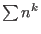

Next:
Preface
Contents
Index
Linear Algebra
for Pen and Mouse
© 2021 Tom Czyczko
Date:
February 1, 2021
Preface
Contents
Introduction -
The subject of linear algebra
Matrices and Analytic Geometry
Some Mathematical Notation
Number Systems
Fields
Linear Equations
Using Lamp to Graph Linear Equations
Systems of Linear Equations
Linear Inequalities
Row Operations
Gauss-Jordan Elimination
Row Operations and Lamp
Reduced Row Echelon Form
Parameters
Matrix Arithmetic
Matrix Addition and Scalar Multiplication
Matrix Multiplication
Matrix Inverses, Part A
Elementary Matrices
Matrix Inverses, Part B
Applications
Graph Theory and Networks
Electrical Circuits
Cryptography
Probability and Stochastic Matrices
Leontif Economic Models
Chemical Reactions (Stoichiometry)
Vector Spaces
Vectors and Plane Geometry
Inner Products: the Dot Product
The Outer Product
Subspaces
Linear Spans
Bases, Linear Independence, Matrix Rank
Coordinate Matrices and Change of Basis
The Geometric Product
Blades
Multivectors
Determinants
Definition of a Determinant
Determinants and Row Operations
Determinants and Inverses
Cramer's Rule
Linear Transformations
Definitions and Examples
Range and Kernel
Matrix Representation
Isomorphisms
Plane Linear Transformations
More Applications
Statistics and Least Squares Regression
Quadratic Approximation
Linear Programming
3D Computer Graphics
Derivation of

Answers to Selected Problems
Answers to Selected Exercises
Lamp on your Computer
L'Envoi
Index